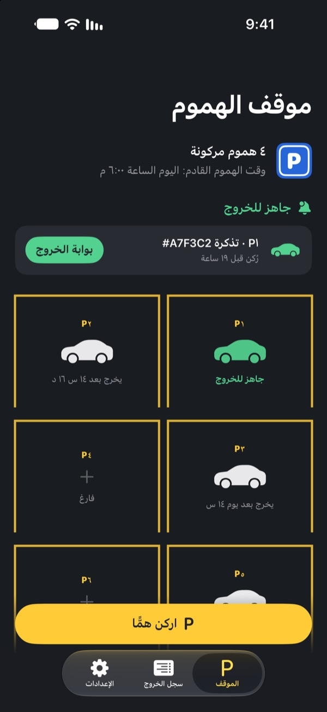
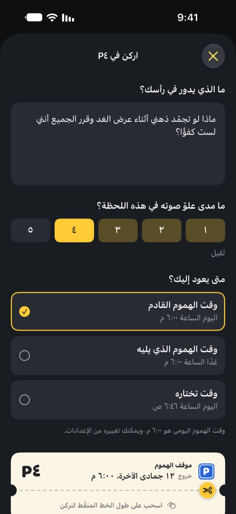
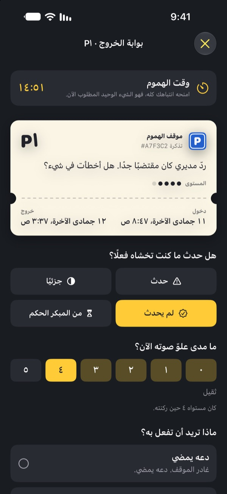
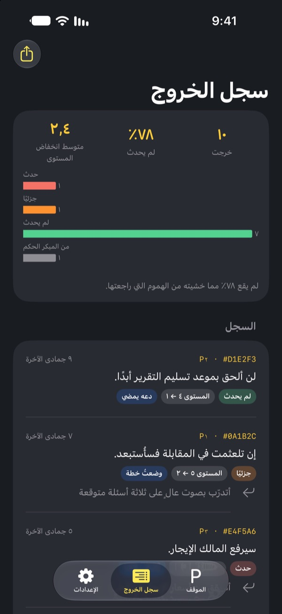

اركن الهمّ الآن،
وعُد إليه لاحقًا
اكتب ما يدور في رأسك عند النوم واتركه على تذكرة موقف. سنعيده إليك في وقت الهموم الذي تختاره، وحتى ذلك الحين لست مضطرًا إلى حمله.
مجاني للاستخدام، ومع برو حين تحتاج مساحة أكبر. بلا إعلانات وبلا حساب.

اركن همًّا واحدًا
أبقِ المثال أو اكتب ما يشغلك الآن. ما إن يُركن حتى يختفي خلف غشاوة، ثم تُخرجه في وقت الهموم.
تُطفئ النور فتشتعل الهموم؟
ما إن تضع رأسك على الوسادة حتى يبدأ كل شيء: كلمة قلتها اليوم، واجتماع الغد، ورسالة لم يأتِ ردّها بعد. وكلما قلت لنفسك «توقف عن التفكير» ازداد الصوت علوًّا. موقف الهموم لا يطلب منك أن تطرد الهمّ، بل أن تكتبه وتمنحه مكانًا وتحدد وقتًا تنظر فيه.
اكتبه، فيخرج من رأسك
اكتبه تمامًا كما يتردد في رأسك، ثم اختر مدى علوّ صوته من 1 إلى 5. اقطع التذكرة، فيبقى الهمّ في الموقف مغطًّى بغشاوة.
وإن عاد إلى رأسك، فقل له: «لك مكانك المحجوز». له وقته، وليس الآن.

واجهه ربع ساعة في وقت الهموم
كل يوم في وقت الهموم يصلك تنبيه. عند بوابة الخروج تقرأ الهمّ من جديد، وتتحقق هل حدث فعلًا، وترى مدى علوّ صوته الآن.
ثم دعه يمضي، أو حوّله إلى خطوة تالية صغيرة، أو اركنه من جديد حتى وقت الهموم القادم.

اكتشف كم مرة تحققت همومك
كلما تراكمت الهموم التي راجعتها، أراك سجل الخروج نسبة ما حدث منها فعلًا ومقدار انخفاض مستواها.
القلق يميل إلى توقع المستقبل أسوأ مما يكون. وكلما سجّلت أكثر، قلّ تصديقك للهمّ التالي.

ثلاث خطوات للبدء
- 1
اختر وقت الهموم
في أول مرة تفتح التطبيق، اختر الوقت الذي تواجه فيه همومك كل يوم. يمكنك تغييره لاحقًا من الإعدادات.
- 2
اركن همًّا حقيقيًا
اركن شيئًا يشغلك الآن، ولاحظ كيف يتغير مستواه قبل الركن وبعده.
- 3
اسمح بتنبيهات الخروج
في وقت الهموم يصلك تنبيه لا يحمل إلا رقم الموقف.
لماذا ينجح؟
- اقلق في وقت واحد محدد
- من نقلوا قلقهم إلى وقت قصير مخصص له كل يوم قضوا وقتًا أقل في القلق، وذكروا قلقًا أخف ومشكلات نوم أقل. (Borkovec وزملاؤه، 1983؛ McGowan و Behar، 2013)
- اكتبه لتضعه جانبًا
- وضع خطة محددة منع المهام غير المنجزة من اقتحام الأفكار، وساعدت خمس دقائق من الكتابة قبل النوم على النوم أسرع. (Masicampo و Baumeister، 2011؛ Scullin وزملاؤه، 2018)
- تحقّق مما حدث فعلًا
- حين دوّن أصحاب القلق المزمن همومهم، تبيّن أن 91% منها لم يحدث. (LaFreniere و Newman، 2020)
صُمّم موقف الهموم على «تأجيل القلق»، وهي تقنية من العلاج المعرفي السلوكي دُرست على مدى عقود.
مجاني، ومع برو مساحة أكبر
المجاني
- 5 مواقف
- الخروج في وقت الهموم مع تنبيه يومي
- بوابة الخروج وسجل الخروج
- تصدير سجل الخروج كنص
برو
- مواقف بلا حدود
- موعد خروج تختاره بنفسك
- رؤى الخروج: كم منها تحقق، وكم انخفض مستواها
اشتراك أسبوعي أو شهري أو سنوي، أو شراء لمرة واحدة مدى الحياة. الإكراميات لا تفتح أي ميزة.
بلا إعلانات، وبلا حساب، وبلا خوادم للمطوّر، وبلا أدوات تحليل. ما تكتبه يبقى على جهازك وفي حساب iCloud الخاص بك.
أسئلة
كيف أغيّر وقت الهموم؟
افتح «وقت الهموم» في تبويب الإعدادات. يسري الوقت الجديد على الهموم التي تركنها بعد ذلك، أما المركونة من قبل فتحتفظ بموعد خروجها.
لا تصلني تنبيهات الخروج.
تحقّق من «التنبيهات» في تبويب الإعدادات. إن ظهر أن التنبيهات متوقفة، فاضغط «فتح إعدادات iOS» وفعّلها. وقد تصل التنبيهات بصمت إن كان وضع التركيز مفعّلًا. وحتى دون تنبيه، تظهر الهموم التي حان موعدها في الموقف على أنها جاهزة للخروج.
هل يرى الآخرون همّي في التنبيه؟
لا. لا تعرض التنبيهات إلا رقم الموقف، مثل «P3 جاهز للخروج». ولا يظهر الهمّ نفسه إلا حين تفتح التطبيق وتدخل بوابة الخروج.
هل أستطيع رؤية الهمّ قبل وقت الهموم؟
اضغط على سيارته في الموقف واختر «أرسله إلى بوابة الخروج الآن». لكن التأجيل ينجح أكثر حين تنتظر، فمعظم الهموم تبدو أصغر عندما يحين وقتها.
هل تنتقل سجلاتي إلى iPhone جديد؟
إن كنت مسجّل الدخول إلى iCloud، تُحفظ سجلاتك في حساب iCloud الخاص بك وتظهر على أجهزتك الأخرى بالحساب نفسه. وتنتقل كذلك عند استعادة نسخة احتياطية أو استخدام البدء السريع.
كيف أحذف سجلاتي؟
في تبويب سجل الخروج، اسحب أي سجل جانبًا لحذفه. وحذف التطبيق يزيل كل ما خزّنه على جهازك.
هل هذا علاج؟
موقف الهموم أداة للعناية الذاتية مبنية على تأجيل القلق من العلاج المعرفي السلوكي. ليس جهازًا طبيًا، ولا يغني عن التشخيص أو العلاج المتخصص.
وماذا لو كنت أمر بوقت صعب حقًا؟
إن صار القلق يعيق حياتك اليومية، أو راودتك أفكار بإيذاء نفسك، فلا تحمل ذلك وحدك. تواصل مع مختص في الصحة النفسية، أو اتصل برقم الطوارئ في بلدك، أو ابحث عن خط مساعدة قريب منك في findahelpline.com.
لديك سؤال أو ملاحظة؟ راسلنا على leeo@kakao.com.